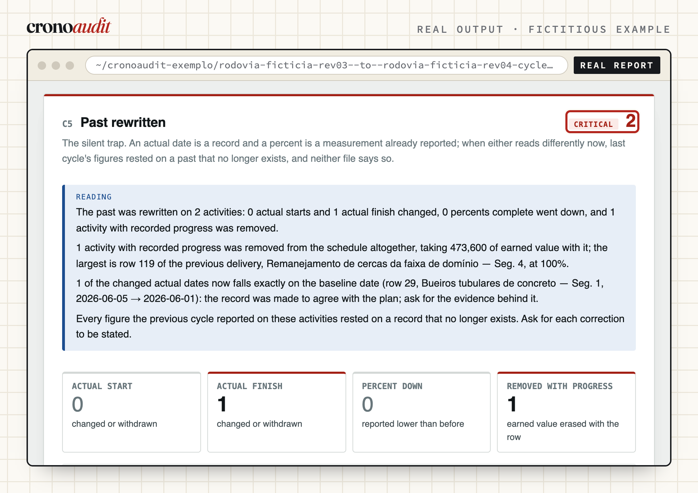

1
A record rewritten after the fact.
The actual finish of row 29 was 05/06/2026 in rev03 and reads 01/06/2026 in rev04, exactly its baseline date. Row 119, at 100%, was removed, and 473,600 of earned value went with it. Neither file says so.
